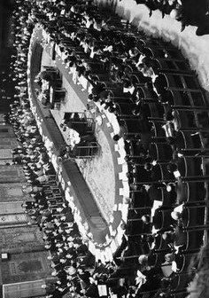

Konferensi Meja Bundar (KMB), dalam bahasa Belanda disebut Nederlands-Indonesische rondetafelconferentie, adalah sebuah konferensi yang diselenggarakan di Den Haag, Belanda, dari tanggal 23 Agustus hingga 2 November 1949. Konferensi ini dihadiri oleh perwakilan Kerajaan Belanda, Republik Indonesia, dan Majelis Permusyawaratan Federal yang mewakili berbagai negara bagian yang didirikan Belanda di kepulauan Indonesia. Konferensi ini berakhir dengan penyerahan kedaulatan kepada Republik Indonesia Serikat.
Sebelum KMB berlangsung, sudah ada tiga pertemuan tingkat tinggi antara Belanda dan Indonesia, yaitu Perundingan Linggajati pada tahun 1947, Perjanjian Renville pada tahun 1948, dan Perjanjian Roem-Royen pada tahun 1949. Usaha Belanda untuk meredam kemerdekaan Indonesia melalui kekerasan berakhir dengan kegagalan dan mendapat kecaman keras dari dunia internasional. Pada 28 Januari 1949, Dewan Keamanan PBB mengeluarkan resolusi yang mengecam serangan militer Belanda terhadap tentara Republik Indonesia dan menuntut dipulihkannya pemerintah Republik, sekaligus mendorong perundingan damai antara kedua pihak.
Setelah Perjanjian Roem-Royen ditandatangani, Mohammad Roem menyatakan bahwa Republik Indonesia bersedia ikut serta dalam KMB untuk mempercepat penyerahan kedaulatan. Pemerintah Indonesia yang sebelumnya diasingkan selama enam bulan, kemudian kembali ke ibu kota sementara di Yogyakarta pada 6 Juli 1949. Sebelum KMB digelar di Den Haag, terlebih dahulu diadakan Konferensi Inter-Indonesia di Yogyakarta pada 31 Juli hingga 2 Agustus 1949, untuk memastikan kesamaan posisi perundingan antara delegasi Republik dan Federal.
Perundingan KMB menghasilkan sejumlah dokumen penting, di antaranya Piagam Kedaulatan, Statuta Persatuan, serta kesepakatan ekonomi, sosial, dan militer. Belanda menyepakati penarikan mundur tentaranya dalam waktu sesingkat-singkatnya, sementara Republik Indonesia Serikat memberikan status bangsa yang paling disukai kepada Belanda. Namun perundingan sempat alot karena adanya perdebatan mengenai masalah utang pemerintah kolonial Belanda dan status wilayah Papua Barat yang memanas dan nyaris membuat konferensi buntu.
Salah satu permasalahan terbesar dalam KMB adalah soal utang luar negeri pemerintah kolonial Hindia Belanda. Delegasi Indonesia merasa keberatan karena harus ikut membayar biaya yang dianggap digunakan Belanda untuk melakukan agresi militer terhadap Indonesia sendiri. Namun setelah intervensi dari anggota Amerika Serikat dalam komisi PBB untuk Indonesia, delegasi Indonesia akhirnya menyadari bahwa kesediaan menanggung sebagian utang Belanda adalah harga yang harus dibayar demi mendapatkan kedaulatan. Pada 24 Oktober 1949, delegasi Indonesia menyetujui untuk menanggung sekitar 4,3 miliar gulden utang pemerintah Hindia Belanda.
Permasalahan lain yang hampir menggagalkan konferensi adalah soal status Papua Barat. Delegasi Indonesia berpendapat bahwa Papua Barat harus menjadi bagian dari wilayah Indonesia sebagai seluruh bekas jajahan Hindia Belanda. Namun Belanda menolak dengan alasan bahwa Papua Barat tidak memiliki ikatan etnis dengan wilayah Indonesia lainnya. Pada akhirnya dicapai kesepakatan bahwa status Papua Barat akan ditentukan melalui perundingan tersendiri antara Indonesia Serikat dan Belanda dalam waktu satu tahun setelah penyerahan kedaulatan.
Konferensi secara resmi ditutup di gedung parlemen Belanda pada 2 November 1949. Hasil utama dari KMB adalah Kerajaan Belanda menyerahkan kedaulatan atas Indonesia sepenuhnya kepada Republik Indonesia Serikat tanpa syarat dan tidak dapat dicabut kembali, serta mengakui RIS sebagai negara yang merdeka dan berdaulat. Penyerahan kedaulatan tersebut dilaksanakan selambat-lambatnya pada tanggal 30 Desember 1949. Selain itu, dibentuk pula persekutuan Uni Indonesia-Belanda dengan pemimpin kerajaan Belanda sebagai kepala negara, serta RIS diwajibkan mengambil alih utang Hindia Belanda.
Pada tanggal 27 Desember 1949, kedaulatan resmi dipindahkan kepada Republik Indonesia Serikat. Soekarno dilantik sebagai Presiden dan Mohammad Hatta sebagai Perdana Menteri, membentuk Kabinet Republik Indonesia Serikat. Indonesia Serikat terdiri dari 16 negara bagian dan menjalin persekutuan dengan Kerajaan Belanda. Tanggal inilah yang awalnya diakui oleh Belanda sebagai tanggal kemerdekaan Indonesia, hingga pada 15 Agustus 2005 pemerintah Belanda secara resmi mengakui bahwa kemerdekaan de facto Indonesia sebenarnya dimulai sejak 17 Agustus 1945.
Terkait utang Hindia Belanda, pemerintahan Soekarno membayar sekitar 4 miliar gulden dalam kurun waktu 1950 hingga 1956, namun kemudian memutuskan menghentikan pembayaran akibat memanasnya hubungan antara Indonesia dan Belanda karena sengketa Irian Barat. Di awal pemerintahan Soeharto, Indonesia memulai kembali pembayaran utang tersebut sebagai syarat mendapatkan bantuan dana dari IGGI untuk mengatasi krisis ekonomi. Pembayaran ini terus berlangsung selama 35 tahun dan baru benar-benar lunas pada tahun 2003.
KMB merupakan titik akhir dari perjuangan panjang Indonesia untuk mendapatkan pengakuan kedaulatan secara penuh dari Belanda. Meskipun hasilnya tidak sempurna karena masih menyisakan persoalan Papua Barat dan beban utang yang berat, KMB tetap menjadi tonggak penting dalam sejarah Indonesia modern. Peristiwa ini membuktikan bahwa kemerdekaan tidak hanya diraih melalui perjuangan fisik di medan perang, tetapi juga melalui strategi diplomasi yang cerdas dan negosiasi politik yang gigih di meja perundingan.